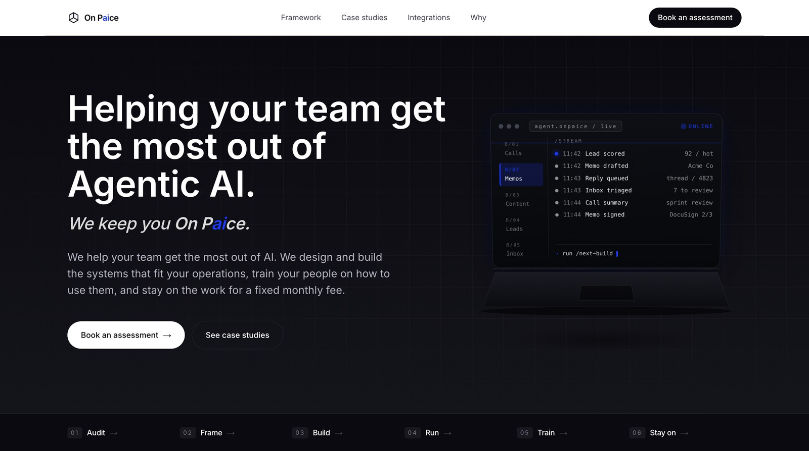

The public landing page
I designed and built OnPaice's public website. It presents the company's approach to agentic AI: its framework, its standard builds, client case studies, and integrations, all in a clean, tech-forward interface.

A custom CRM for the whole pipeline
I programmed a CRM to run OnPaice's client operations end to end. It gives the team one place to see the business at a glance and to drill into every client, contact, and project.
Dashboard
A quick overview of the company's core financials at a glance.
Pipeline
Every client sorted by stage (prospecting, SOW sent, signed, on hold, or lost), with full detail on each one.
Contacts
Every client contact (the people) and their contact information.
Accounts
Every client company and its account details.
Vendors
What each developer is working on, with suggestions for the best way to split projects and balance the workload.
Reach-out
Flags clients and prospects who have not been contacted recently and need a follow-up, with their contact info ready to go.
Illustrative pipeline view. Real client data is not shown.
One back-end, every tool in sync
I built the back-end on Firebase and Firestore, then wired it to both the CRM I programmed and Zoho CRM. A change made in any one of them syncs to the others in real time, so every platform the team uses always shows the same, current data. The pattern became a reusable framework OnPaice adopted for its own client work.
Custom CRM
The CRM I built, used day to day by the team.
Firebase / Firestore
The back-end and single source of truth for all client data.
Zoho CRM
The third-party CRM the business also runs on.
A change on any one platform syncs to all of them, automatically.
A newsletter that writes and sends itself
I built an agentic monthly newsletter that runs on its own. Scheduled jobs gather everything worked on that month, separate agents research the new AI advances the team is adopting, and AI composes the finished newsletter and sends it to the entire network.
Gather
Scheduled jobs collect the month's work: client conversations, conferences, internal comms, emails, and new deals.
Research
Agents detect the new AI advances the team is using to sharpen its work.
Compose & send
AI writes the finished newsletter and sends it to everyone in the pipeline and network.